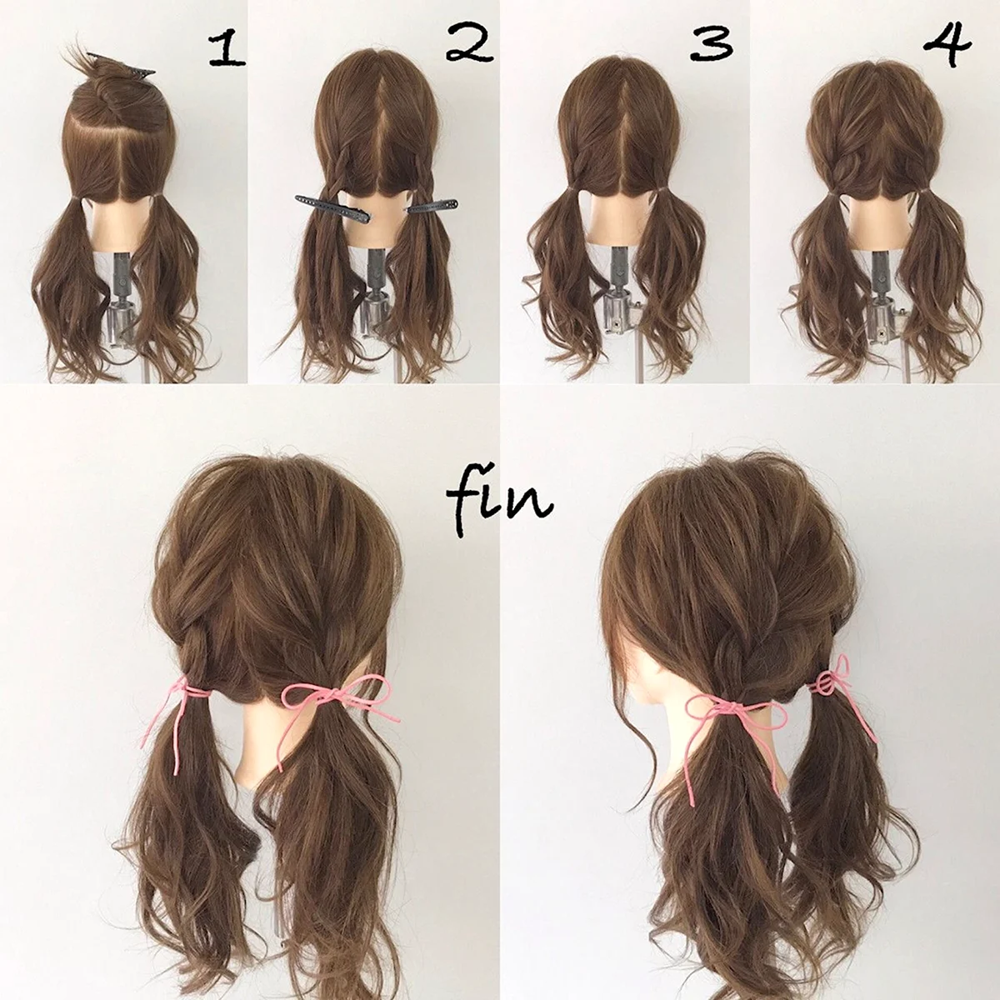

корейская косичка
Суть стиля корейских косичек заключается в том, что волосы сплетаются в несколько плетеных кос, которые заплетаются вокруг головы или украшаются различными аксессуарами. Волосы перед началом сплетения обычно ровные и гладкие, что придает укладке еще больше аккуратности и элегантности. Кроме того, стиль корейских косичек подходит для различных длин волос – и для коротких, и для длинных
Корейские косички также часто делают с использованием заколок, лент и других аксессуаров, которые придает укладке дополнительное очарование. Это позволяет варьировать стиль укладки и создавать разнообразные плетения, которые позволяют выразить свою индивидуальность и фантазию. Кроме того, корейские косички можно дополнить различными аксессуарами, такими как заколки с жемчужинами, ленты, цветы, бусы и т. д.
